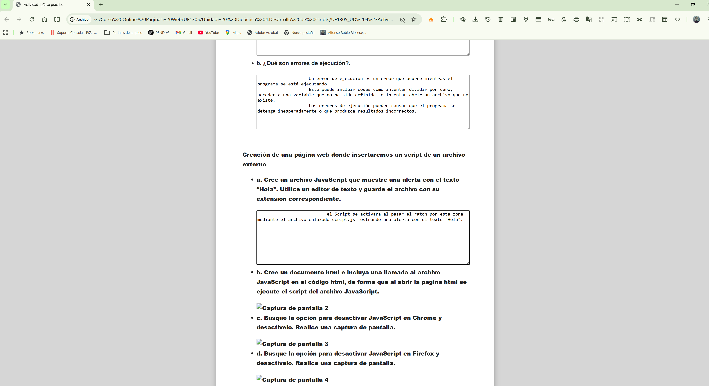
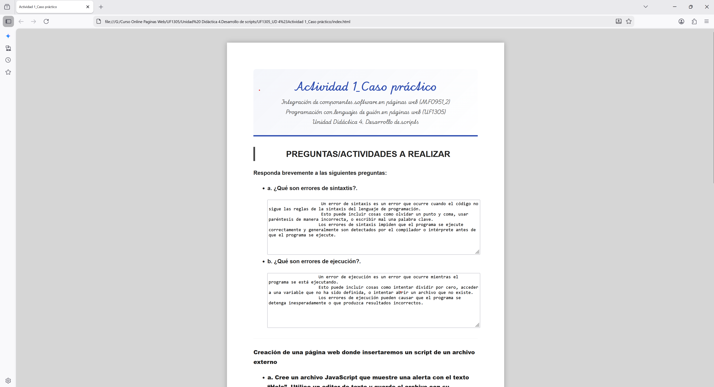
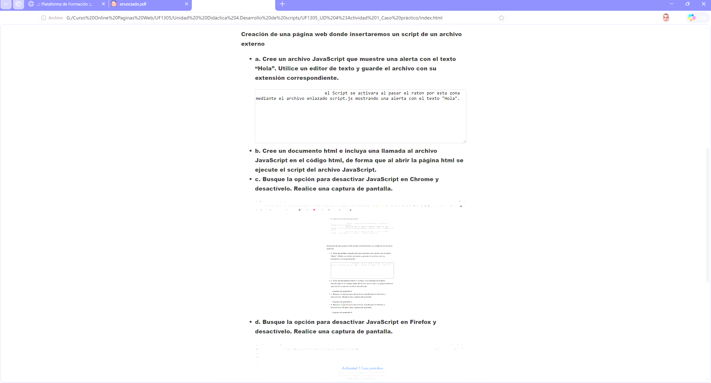

Actividad 1_Caso práctico
Integración de componentes software en páginas web (MF0951_2)
Programación con lenguajes de guión en páginas web (UF1305)
Unidad Didáctica 4. Desarrollo de scripts
PREGUNTAS/ACTIVIDADES A REALIZAR
Pregunta 1.Responda brevemente a las siguientes preguntas:
- a. ¿Qué son errores de sintaxtis?.
- b. ¿Qué son errores de ejecución?.
Pregunta 2.Creación de una página web donde insertaremos un script de un archivo externo
- a. Cree un archivo JavaScript que muestre una alerta con el texto “Hola”. Utilice un editor
de texto y guarde el archivo con su extensión correspondiente.
- b. Cree un documento html e incluya una llamada al archivo JavaScript en el código html,
de forma que al abrir la página html se ejecute el script del archivo JavaScript.
- c. Busque la opción para desactivar JavaScript en Chrome y desactívelo. Realice una
captura de pantalla.

- d. Busque la opción para desactivar JavaScript en Firefox y desactívelo. Realice una
captura de pantalla.

- e. Busque la opción para desactivar JavaScript en Internet Explorer y desactívelo. Realice
una captura de pantalla.

© Alfonso Rubio Rioseras 2026 Actividad 1_Caso práctico. Todos los derechos reservados.